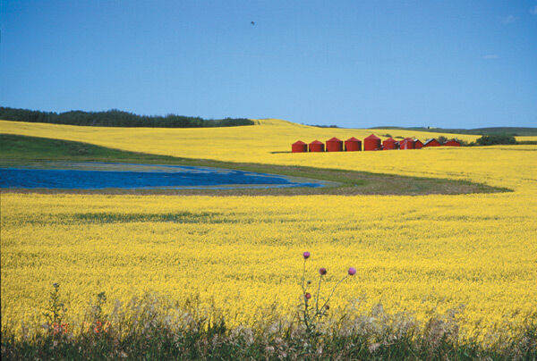
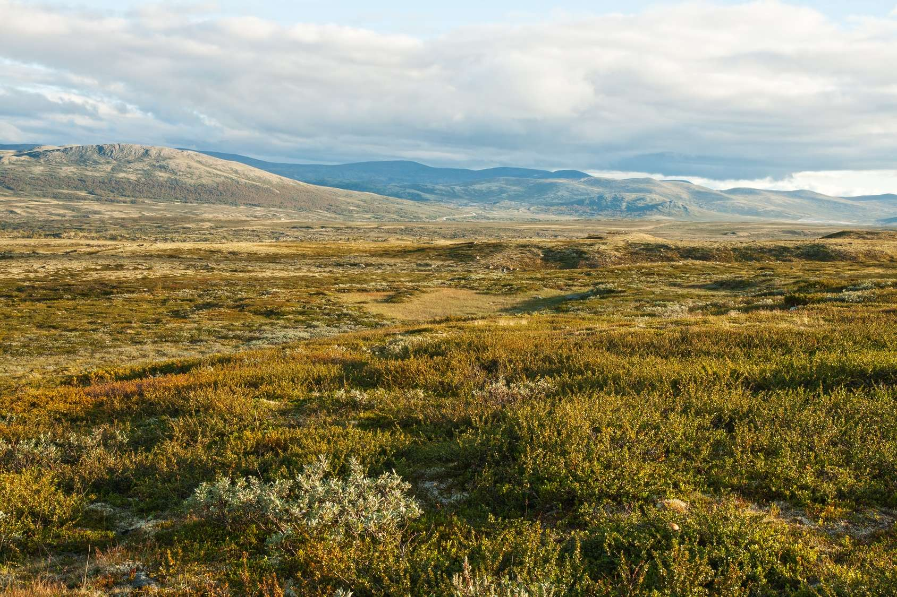
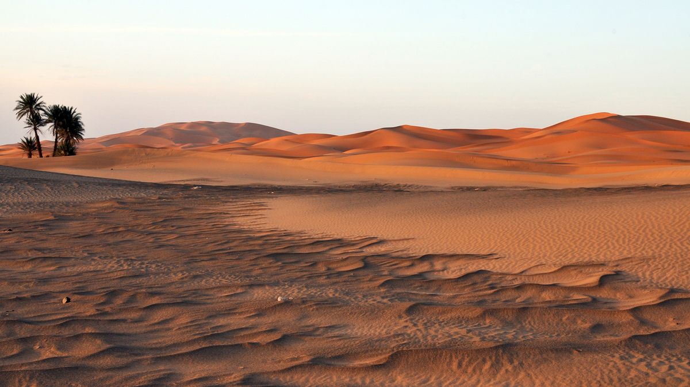

Comment le changement climatique affecte-t-il les écosystèmes terrestres ?
C'est quoi les écosystèmes terrestres?
Les écosystèmes terrestres sont des communautés d'organismes vivants (plantes, animaux, micro-organismes) qui interagissent avec leur environnement physique non vivant (sol, air, climat) sur la surface terrestre.
Quelques exemples:
Les Prairies:
Le réchauffement climatique a des impacts importants sur les prairies, qui sont des écosystèmes cruciaux pour la biodiversité et l'agriculture. Les températures plus élevées modifient la composition des espèces végétales, certaines plantes ne pouvant pas survivre à des chaleurs prolongées. Les périodes de sécheresse, devenues plus fréquentes et intenses, réduisent la disponibilité en eau, affectant la croissance des plantes et rendant le sol vulnérable à l'érosion. De plus, les changements dans les régimes de précipitation perturbent les cycles de croissance, tandis que l'augmentation des incendies de prairie, alimentée par des conditions plus sèches et chaudes, détruit des hectares de végétation. Ces changements favorisent également l'invasion d'espèces exotiques envahissantes, perturbant l'équilibre écologique. En conséquence, les animaux dépendant des prairies pour leur habitat et leur nourriture peuvent être contraints de se déplacer ou de voir leurs populations décliner.
Les Forêts Tempérées:
Le réchauffement climatique a des effets profonds sur les forêts tempérées, altérant leur structure et leur fonction. L'augmentation des températures et les modifications des régimes de précipitation peuvent entraîner des périodes de sécheresse plus fréquentes et prolongées, réduisant l'humidité du sol et stressant les arbres. Cette situation favorise la propagation des incendies de forêt, qui peuvent détruire de vastes étendues de végétation. Par ailleurs, les changements climatiques créent des conditions propices à la prolifération de ravageurs et de maladies, comme les scolytes, qui peuvent décimer des populations d'arbres. Les espèces d'arbres moins tolérantes à la chaleur peuvent également décliner, tandis que les espèces invasives, mieux adaptées aux nouvelles conditions, peuvent se propager, perturbant l'équilibre des écosystèmes forestiers. En conséquence, la biodiversité des forêts tempérées est menacée, tout comme leur capacité à capturer et stocker le carbone, exacerbant ainsi le cycle du réchauffement climatique.

Les Forêts Boréales:
Le réchauffement climatique a des effets considérables sur les forêts boréales, qui couvrent de vastes régions de l'hémisphère nord. L'augmentation des températures entraîne un dégel accéléré du pergélisol, ce qui modifie la structure du sol et affecte la stabilité des arbres. Les périodes de chaleur prolongées et les sécheresses accrues augmentent le risque d'incendies de forêt, qui peuvent ravager des milliers d'hectares et perturber les écosystèmes forestiers. De plus, les températures plus chaudes favorisent la prolifération de ravageurs comme le dendroctone du pin, dont les épidémies peuvent décimer des forêts entières. Les arbres boréaux, adaptés à des conditions froides, peuvent aussi subir un stress thermique, ralentissant leur croissance et diminuant leur résilience face aux maladies et aux perturbations. En conséquence, la biodiversité de ces forêts est menacée, et leur rôle crucial dans le stockage du carbone est compromis, ce qui exacerbe encore les effets du changement climatique.

Les Montagnes:
Le réchauffement climatique a des effets considérables sur les écosystèmes montagneux. La hausse des températures entraîne la fonte rapide des glaciers et des neiges éternelles, réduisant les réserves d'eau douce disponibles pour les vallées en contrebas. Les changements climatiques affectent également la biodiversité montagnarde, avec des espèces animales et végétales qui doivent migrer vers des altitudes plus élevées pour trouver des conditions adéquates. Cela perturbe les équilibres écologiques et menace les espèces endémiques. De plus, l'augmentation des températures favorise l'érosion des sols et la fréquence des événements météorologiques extrêmes, comme les avalanches et les glissements de terrain, mettant en danger les habitats naturels et les communautés humaines vivant en montagne.

Les Toundras:
Le réchauffement climatique a des effets significatifs sur les toundras, des écosystèmes caractérisés par des sols gelés et une végétation clairsemée. L'augmentation des températures conduit au dégel du pergélisol, libérant des gaz à effet de serre comme le méthane et le dioxyde de carbone, ce qui exacerbe encore le réchauffement climatique. Ce dégel affecte également la stabilité des sols, provoquant l'affaissement du terrain et endommageant les infrastructures. Les périodes de chaleur prolongées et l'augmentation de la fréquence des incendies peuvent altérer la composition végétale, favorisant des espèces moins adaptées aux conditions froides. Par ailleurs, les changements dans les régimes de précipitations, avec des pluies plus abondantes et des fontes de neige plus rapides, modifient le cycle hydrologique, entraînant des inondations et l'érosion des sols. Ces transformations perturbent les habitats des espèces animales typiques des toundras, comme les rennes et les lemmings, et menacent leur survie.
Les Déserts:
Le réchauffement climatique a des impacts notables sur les déserts, des écosystèmes déjà caractérisés par des conditions extrêmes. L'augmentation des températures exacerbe les vagues de chaleur, rendant ces régions encore plus inhospitalières pour les plantes, les animaux et les humains. La hausse des températures accentue également l'évaporation, réduisant la disponibilité en eau et aggravant les conditions de sécheresse. En conséquence, les plantes et les animaux qui sont parfaitement adaptés aux conditions désertiques peuvent être mis en danger, car leur tolérance aux extrêmes est dépassée. Par ailleurs, les changements dans les régimes de précipitations, avec des pluies plus irrégulières et des périodes de sécheresse prolongées, peuvent altérer les sols et augmenter le risque d'érosion, rendant la végétation encore plus clairsemée. Ces conditions difficiles peuvent aussi affecter les populations humaines vivant dans les zones désertiques, en limitant les ressources en eau et en augmentant les défis pour l'agriculture et la subsistance.
